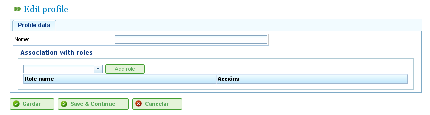

Gestão de Usuários
Gerenciar Usuários
O sistema do LibrePlan permite aos administradores gerenciar perfis de usuários, autorizações e usuários. Os usuários são atribuídos a perfis de usuários, que podem ter uma série de funções predefinidas que concedem acesso às funcionalidades do programa. As funções são autorizações definidas no LibrePlan. Exemplos de funções incluem:
- Administração: Uma função que deve ser atribuída a administradores para habilitá-los a realizar operações administrativas.
- Leitor de Serviços Web: Uma função necessária para que os usuários consultem os serviços web do programa.
- Escritor de Serviços Web: Uma função necessária para que os usuários escrevam dados através dos serviços web do programa.
As funções estão predefinidas no sistema. Um perfil de usuário consiste em uma ou mais funções. Os usuários devem ter funções específicas para realizar determinadas operações.
Os usuários podem ser atribuídos a um ou mais perfis, ou a uma ou mais funções diretamente, permitindo que sejam concedidas autorizações específicas ou genéricas.
Para gerenciar usuários, siga estes passos:
- Vá a "Gerenciar usuários" no menu "Administração".
- O programa exibe um formulário com uma lista de usuários.
- Clique no botão de edição para o usuário desejado ou clique no botão "Criar".
- Um formulário aparecerá com os seguintes campos:
- Nome de Usuário: O nome de login do usuário.
- Senha: A senha do usuário.
- Autorizado/Não autorizado: Uma configuração para ativar ou desativar a conta do usuário.
- E-mail: O endereço de e-mail do usuário.
- Lista de Funções Associadas: Para adicionar uma nova função, os usuários devem pesquisar uma função na lista de seleção e clicar em "Atribuir".
- Lista de Perfis Associados: Para adicionar um novo perfil, os usuários devem pesquisar um perfil na lista de seleção e clicar em "Atribuir".

Gerenciamento de Usuários
- Clique em "Salvar" ou "Salvar e continuar".
Gerenciamento de Perfis
Para gerenciar os perfis do programa, os usuários devem seguir estes passos:
- Vá a "Gerenciar perfis de usuários" no menu "Administração".
- O programa exibe uma lista de perfis.
- Clique no botão de edição para o perfil desejado ou clique em "Criar".
- Um formulário aparece no programa com os seguintes campos:
- Nome: O nome do perfil de usuário.
- Lista de Funções (Autorizações): Para adicionar uma função ao perfil, os usuários devem selecionar uma função da lista de funções e clicar em "Adicionar".

Gerenciamento de Perfis de Usuários
- Clique em "Salvar" ou "Salvar e continuar", e o sistema armazenará o perfil criado ou modificado.